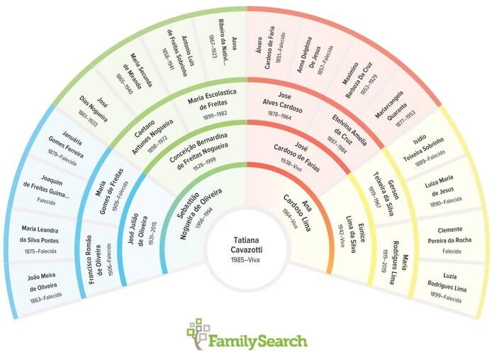

Genealogia e História da Família
O significado de genealogia e História da Família
A genealogia é uma ciência que estuda a origem, evolução e disseminação das várias gerações de uma família. A partir de informações buscadas em documentos e certidões de pais, tios, avós e bisavós... as pessoas conseguem descobrir os nomes de seus antepassados, quando e onde nasceram.
A partir dessa busca é possível construir a árvore genealógica de uma família com nomes, datas e lugares por onde andaram seus antepassados.
História da família significa aprender mais sobre seus antepassados. Em outras palavras não apenas identificá-los através de informações como os locais e as datas de eventos, mas também buscar conhecer sua história, personalidade, desafios que enfrentaram em suas vidas, suas conquistas e assim por diante.
Veja abaixo 6 passos (básicos e simples) para começar hoje mesmo a sua Genealogia e História da família.
Pergunte a Você Mesmo
Primeiro passo é anotar as informações que você mesmo já sabe. Informações que você tomou conhecimento tanto por fatos (documentos, vivência com aqueles familiares) ou por transmissão oral (histórias que os seus pais, avós e outros parentes tenham lhe contato).
Pergunte aos Parentes
Depois entre em contato com aqueles que já sabem partes da história. Parentes que viveram ou tiveram conhecimento transmitido a eles pelas gerações anteriores. Normalmente seus avós, tios-avós, etc. Os parentes mais velhos tem sempre muitas informações e histórias da família prontas para serem transmitidas para a próxima geração. Além disso, eles podem ter fotos e/ou documentos antigos da família que poderiam revelar detalhes interessantes e ocultos sobre sua família. Usando a câmera de seu celular você pode digitalizar essas fotos e documentos para mantê-los com você.
Veja o Que Outras Pessoas Já Descobriram
Um parente distante pode já ter encontrado informações sobre seus antepassados. Isso pode incluir detalhes da vida, fotos ou histórias. A Árvore Familiar do FamilySearch é um bom lugar para começar a olhar primeiro. Por ser uma ferramenta totalmente gratuita e de excelente qualidade na área de genealogia, pessoas do mundo todo a usam. Não tem ideia do que é essa ferramenta? Não se preocupe, expliquei aqui para você no final dessa página.
Procure em Registros Históricos
Igrejas, governos e outras organizações documentaram eventos importantes da vida por gerações. Vá até os locais onde sabe que o antepassado viveu, nasceu, se casou, ou faleceu e pesquise por mais informações sobre seus antepassados. Muitos desses registros históricos estão disponíveis para busca ou pesquisa online (o site FamilySearch tem um acervo enorme com registros civis e religiosos do mundo todo).
Armazene as Informações Encontradas
Esse passo aqui na verdade deve acontecer ao longo da pesquisa genealógica. Portanto, anote, tire fotos, faça cópias, etc. desde o início da pesquisa. Guarde essas anotações, fotos, documentos numa pasta intitulada “Minha Genealogia” (ou outro nome de sua escolha). Essa pasta pode ser física ou um auquivo no computador, ou nos dois formatos. Quando permitido, tire fotos ou digitalize documentos e fotos encontrados nas casas de seus familiares, cartórios, igrejas, cemitérios, etc. É muita informação para que você apenas confie que vá se lembrar depois. O FamilySearch também pode ser usado para guardar suas anotações, fotos e ditalizações documentos.
Crie sua árvore Familiar
No site do FamiliSearch lemos que a árvore genealógica é uma representação das pessoas que tiveram participação na existência de uma pessoa ou família, ou seja, é o histórico que levanta dados sobre os ancestrais dos mesmos de forma que fiquem conhecidas as conexões estabelecidas entre esses.
Comece por você mesmo, depois acrescente seus pais e irmãos, então acrescente seus avós e tios e assim por diante (conforme as informações que você encontrou). Acrescente tanto familiares vivos quanto os que já faleceram. Você pode criar sua árvore familiar em um papel ou online. Se optar por guardar suas informações no site FamilySearch você poderá criar sua árvore familiar facilmente e depois imprimir, caso queira uma cópia física dela.
O Que é o FamilySearch?
FamilySearch é uma organização de pesquisa genealógica. Desde 1894, o FamilySearch trabalha com arquivos, bibliotecas e igrejas em mais de 100 países para facilitar o acesso a registos e documentos que ajudam as pessoas a encontrar os seus antepassados. É a maior organização voltada para esse tipo de pesquisa no mundo!
E o melhor: é totalmente gratuita para seus usuários. Eu uso e recomendo! Veja minha árvore familiar em forma de leque criada pelo FamilySearch. É tudo muito fácil de usar e com reucursos exclelentes.
Como usar o FamilySearch?
Para começar a usar você precisar acessar o site clicando aqui ou baixando o aplicativo “Árvore do FamilySearch” para IOS ou Android no seu dispositivo. Depois, clique em "criar conta GRATUITA" e crie uma conta com um nome de usuário e senha.
Depois de criar sua conta o primeiro passo será construir sua árvore familiar. Além do acesso a essa conta para armazenar as informações de sua pesquisa, você também terá acesso aos registros online de cartórios, igrejas, dentre outros, para fazer sua pesquisa.
Nesse vídeo você vai entender mais sobre o site e como usá-lo: